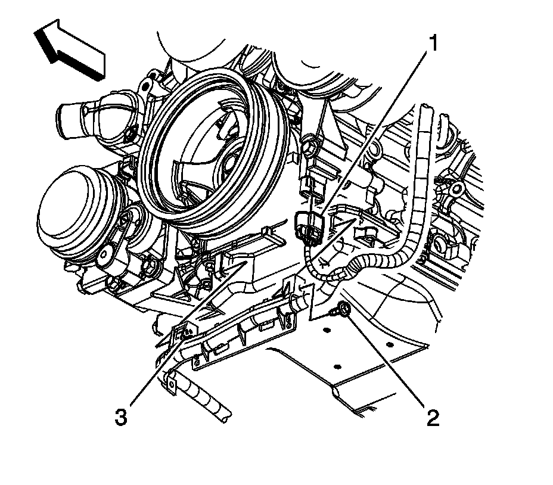
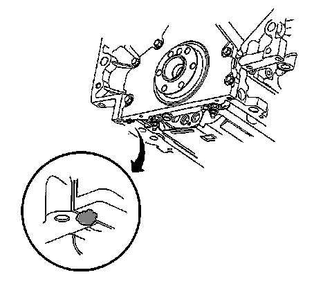

Oil Pan Replacement (4WD)
Oil Pan Replacement (4WD)
Removal Procedure

1. Raise and support the vehicle. Refer to Lifting and Jacking the Vehicle.
2. For 1500 series vehicles, remove the oil pan skid plate bolts and skid plate, if equipped.

3. For 2500 series vehicles, loosen the 2 rear oil pan skid plate bolts, remove the 2 front oil pan skid plate bolts and skid plate, if equipped.
4. Remove the front differential carrier. Refer to Differential Carrier Assembly Replacement.

5. Place a suitable drain pan under the oil pan drain plug.
6. Remove the oil pan drain plug (430).
7. Allow the oil pan to drain completely.
8. Re-install the oil pan drain plug until snug.

9. Place the drain pan under the oil filter.
10. Remove the oil filter (437).
11. Allow the oil to drain completely.
12. Re-install the oil filter until snug.
13. Remove the right side transmission cover bolt.
14. Remove the left side transmission cover bolt and cover.
15. For 1500 series vehicles, remove the crossbar bolts/nuts and crossbar.
16. For 2500 series vehicles, remove the crossbar bolts/nuts and crossbar.
17. For vehicles with a 4L60-E/4L70-E automatic transmission, remove the 2 lower transmission bolts.
18. For vehicles with a 4L80-E automatic transmission, remove the 2 lower transmission bolts.
19. For vehicles with a 6L80-E automatic transmission, remove the lower left transmission bolt.
20. For vehicles with a 6L80-E automatic transmission, remove the lower right transmission stud.

21. Disconnect the engine harness electrical connector (4) from the oil level sensor.
22. Remove the engine harness clip (3) from the transmission oil cooler line bracket.

23. Remove the battery cable channel bolt (2).
24. Slide the channel pin (3) out of the oil pan tab.
25. For vehicles with a 4L60-E/4L70-E automatic transmission, remove the oil cooler lines from the clip (1), if equipped.
26. For vehicles with a 4L80-E automatic transmission, remove the oil cooler lines from the clip (1), if equipped.
27. For vehicles with a 6L80-E automatic transmission, remove the oil cooler lines from the clip (1).
28. Remove the transmission oil cooler line clip bolt and clip from the oil pan.
29. Remove the oil pan bolts.
30. Remove the oil pan.
31. If reusing the oil pan perform the following steps, otherwise proceed to step 3 of the installation procedure.
Important: DO NOT allow foreign material to enter the oil passages of the oil pan, cap or cover the openings as required.
32. Drill out the oil pan gasket rivets (2), if necessary.
33. Remove the oil pan gasket (1) from the pan.
34. Discard the oil pan gasket.
35. Discard the rivets, if necessary.
Installation Procedure
Important:
^ The alignment of the structural oil pan is critical. The rear bolt hole locations of the oil pan provide mounting points for the transmission bellhousing. To ensure the rigidity of the powertrain and correct transmission alignment, it is important that the rear of the block and the rear of the oil pan must NEVER protrude beyond the engine block and transmission bellhousing plane.
^ Do not reuse the oil pan gasket.
^ It is not necessary to rivet the NEW gasket to the oil pan.
1. If reusing the oil pan perform the following step, otherwise proceed to step 3.
Important: Be sure to align the oil gallery passages in the oil pan and engine block properly with the oil pan gasket.
2. Place a NEW oil pan gasket onto the oil pan.
3. Apply a 5 mm (0.20 in) bead of sealant, 20 mm (0.80 in) long to the engine block. Apply the sealant directly onto the tabs of the front cover gasket that protrudes into the oil pan surface. Refer to Sealers, Adhesives, and Lubricants.

4. Apply a 5 mm (0.20 in) bead of sealant, 20 mm (0.8 in) long to the engine block. Apply the sealant directly onto the tabs of the rear cover gasket that protrudes into the oil pan surface. Refer to Sealers, Adhesives, and Lubricants.
5. Install 1 oil pan bolt into a oil pan bolt hole and up through the gasket.
6. Position and install the oil pan and the rest of the oil pan bolts.
7. Tighten the oil pan bolts until snug.
8. For vehicles with a 6L80-E automatic transmission, position the oil cooler bracket and install the lower right transmission stud until snug.
9. For vehicles with a 6L80-E automatic transmission, install the lower left transmission bolt until snug.
10. For vehicles with a 4L80-E automatic transmission, install the 2 lower transmission bolts until snug.
Notice: Refer to Fastener Notice.
11. For vehicles with a 4L60-E/4L70-E automatic transmission, install the 2 lower transmission bolts until snug.
1. Tighten the oil pan and oil pan-to-oil pan front cover bolts to 25 N.m (18 lb ft).
2. Tighten the oil pan-to-rear cover bolts to 12 N.m (106 lb in).
3. Tighten the transmission bolts/stud to 50 N.m (37 lb ft).
12. Position the transmission oil cooler line clip and install the bolt to the oil pan.
Tighten the bolt to 9 N.m (80 lb in).
13. For vehicles with a 6L80-E automatic transmission, install the oil cooler lines to the clip (1).
14. For vehicles with a 4L80-E automatic transmission, install the oil cooler lines to the clip (1), if equipped.
15. For vehicles with a 4L60-E/4L70-E automatic transmission, install the oil cooler lines to the clip (1), if equipped.
16. Position the channel and slide the channel pin (3) into the oil pan tab.
17. Install the battery cable channel bolt (2).
Tighten the bolt to 12 N.m (106 lb in).
18. Connect the engine harness electrical connector (4) to the oil level sensor.
19. Install the engine harness clip (3) to the transmission oil cooler line bracket.
20. For both the 1500 and 2500 series, perform the following steps prior to installing the crossbar bolts.
1. Remove all traces of the original adhesive patch.
2. Clean the threads of the bolts with denatured alcohol or equivalent and allow to dry.
3. Apply threadlock GM P/N 12345493 (Canadian P/N 10953488) or equivalent to the bolt threads.
21. For 2500 series vehicles, install the crossbar and crossbar bolts/nuts.
Tighten the nuts to 120 N.m (89 lb ft).
22. For 1500 series vehicles, install the crossbar and crossbar bolts/nuts.
Tighten the nuts to 100 N.m (74 lb ft).
23. Position the left side transmission cover and install the cover bolt.
Tighten the bolt to 12 N.m (106 lb in).
24. Install the right side transmission cover bolt.
Tighten the bolt to 12 N.m (106 lb in).
25. If reusing the old oil pan remove the old oil filter and install a NEW oil filter.
26. Lubricate the NEW oil filter seal with clean engine oil.
27. Install the NEW oil filter (431).
Tighten the oil filter to 30 N.m (22 lb ft).
28. Ensure that the oil pan drain plug (430) is tight.
Tighten the drain plug to 25 N.m (18 lb ft).
29. Install the front differential carrier. Refer to Differential Carrier Assembly Replacement.
30. For 2500 series vehicles, position the oil pan skid plate and tighten until snug the 2 rear oil pan skid plate bolts, install the 2 front oil pan skid plate bolts, if equipped.
Tighten the bolts to 28 N.m (21 lb ft).
31. For 1500 series vehicles, position the oil pan skid plate and install the oil pan skid plate bolts, if equipped.
Tighten the bolts to 28 N.m (21 lb ft).
32. Lower the vehicle.
33. Fill the engine with NEW engine oil. Refer to Fluid and Lubricant Recommendations and Approximate Fluid Capacities.
34. Start the engine and inspect for leaks.